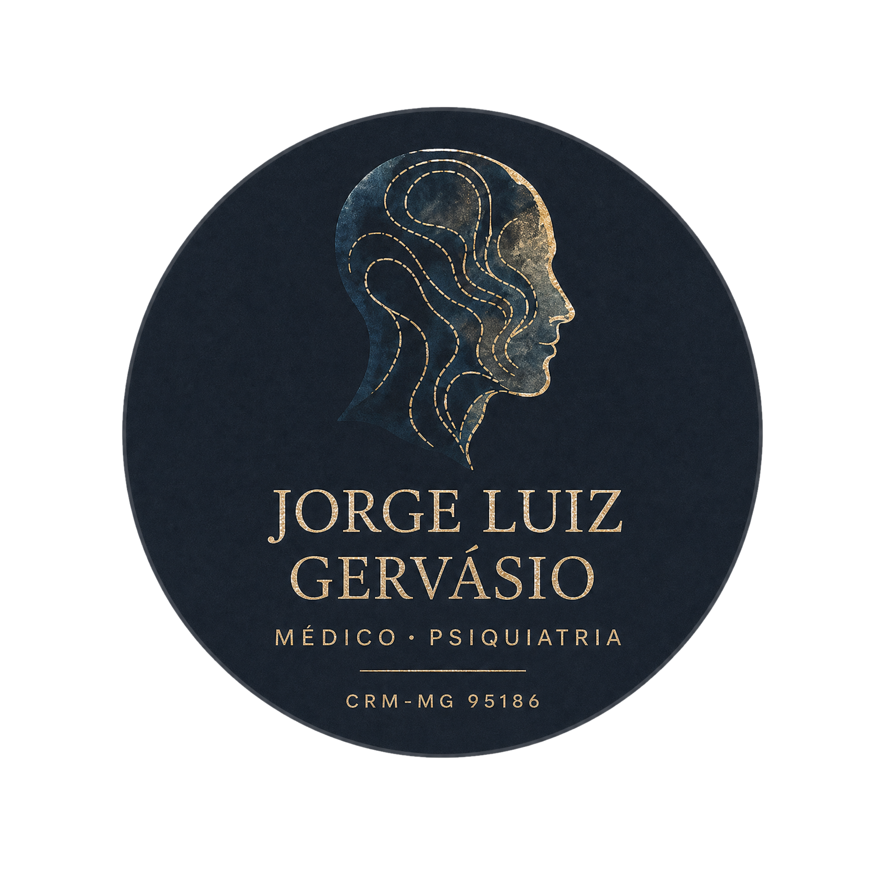
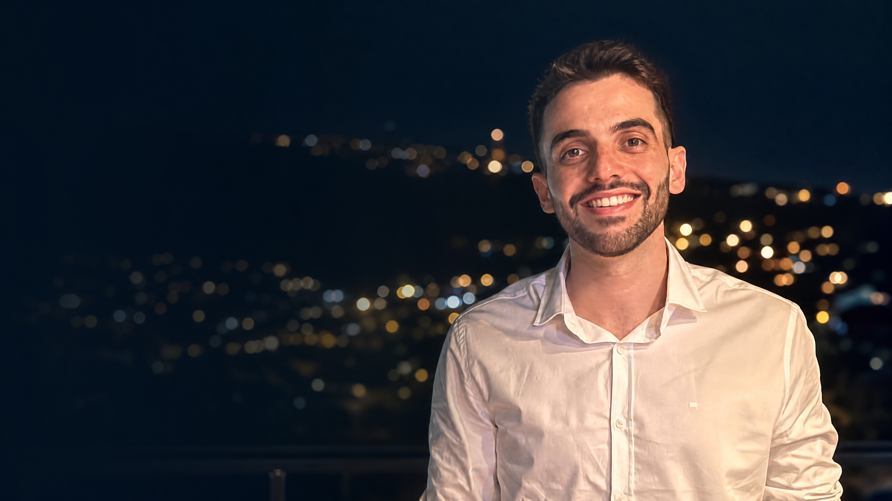
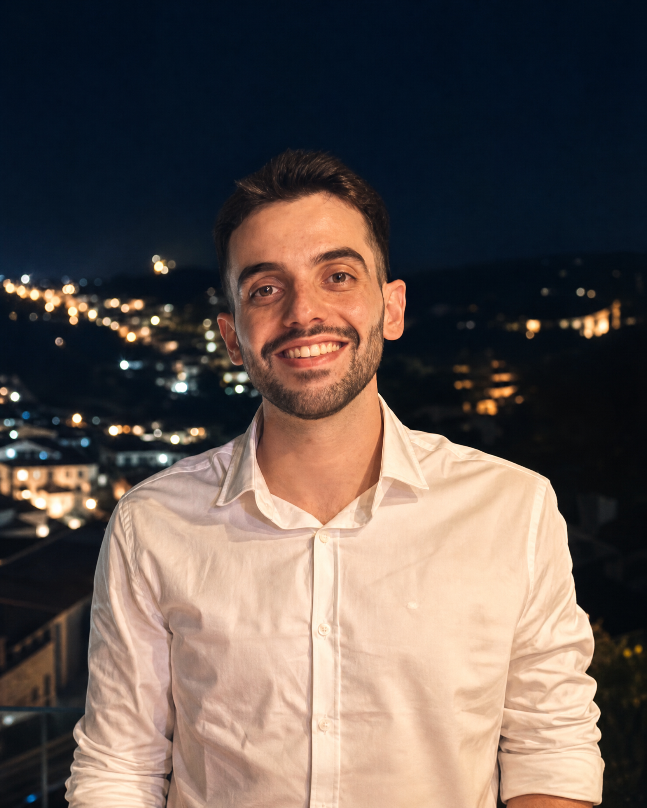

Psiquiatria adulta
Avaliação e acompanhamento individualizado para diferentes demandas de saúde mental.

Jorge LuizPsiquiatria
O Dr. Jorge Luiz Marques Gervásio é médico formado pela Universidade Federal de Ouro Preto, com atuação em serviços de Saúde Mental e residência em Psiquiatria pelo Instituto Raul Soares — FHEMIG.
Seu trabalho prioriza uma escuta qualificada e acolhedora, com uma abordagem individualizada para cada paciente, respeitando sua história, seu momento e suas necessidades.
A consulta é conduzida com ética, cuidado e busca constante por atualização científica.
Atuação em Psiquiatria de adultos, Psicogeriatria e acompanhamento de transtornos ansiosos e depressivos.
Avaliação e acompanhamento individualizado para diferentes demandas de saúde mental.
Cuidado especializado para a saúde mental e a qualidade de vida na maturidade.
Escuta e tratamento para sintomas ansiosos, angústia e impactos na rotina.
Acompanhamento cuidadoso para depressão, oscilações de humor e sofrimento emocional.
“Uma abordagem individualizada começa por ouvir com atenção a história de cada pessoa.”Jorge Luiz Gervásio
Consultas presenciais em Belo Horizonte e atendimento por vídeo, conforme disponibilidade de agenda e modalidade.

